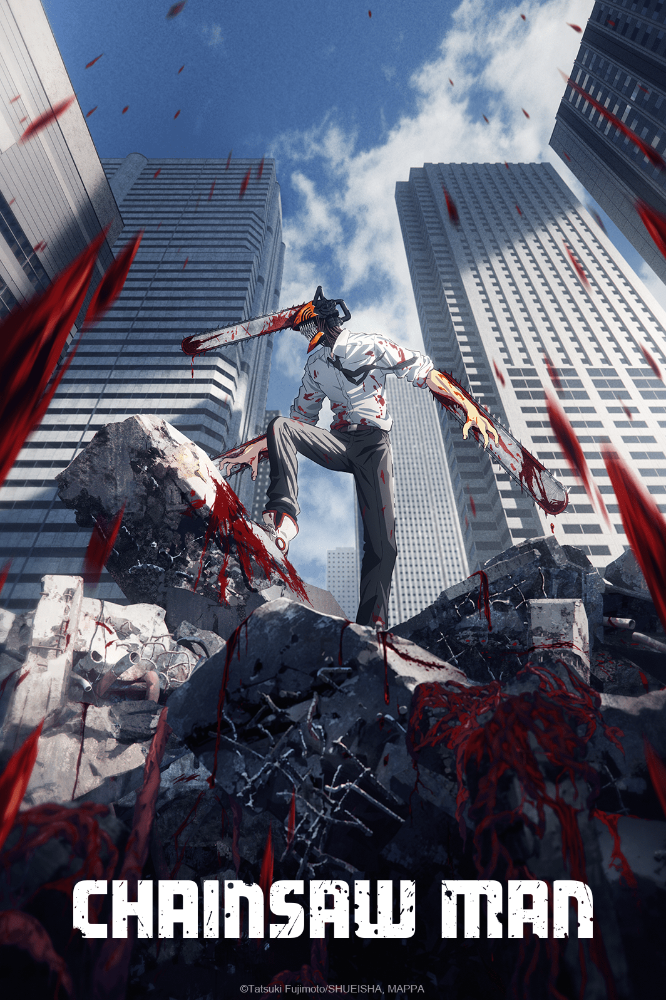
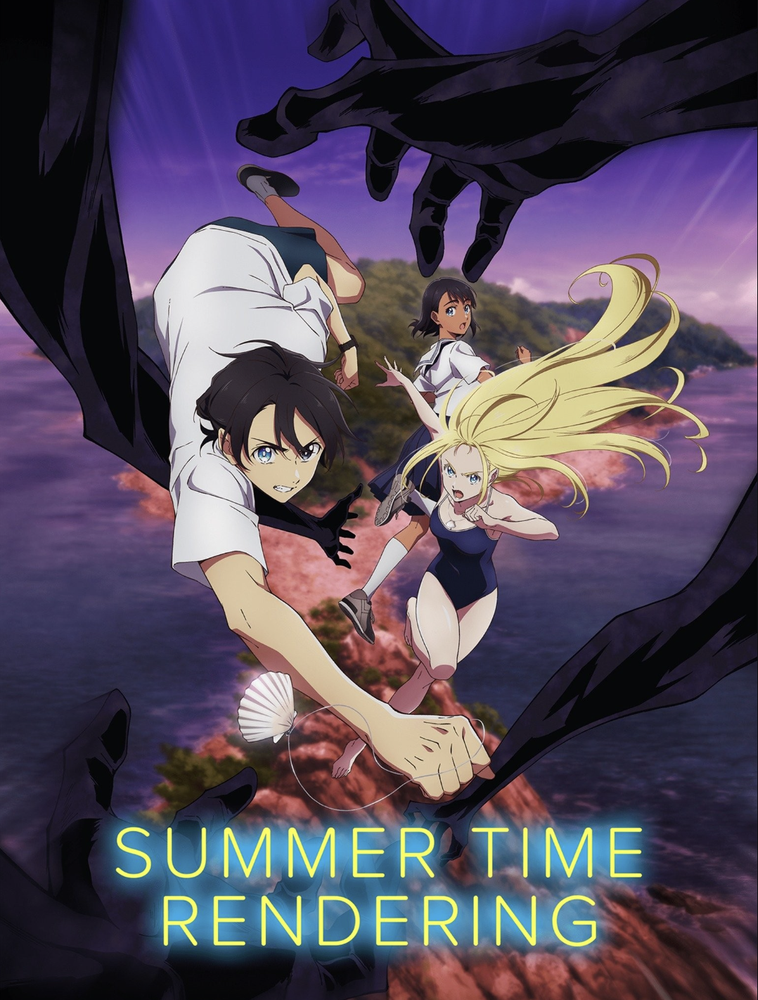
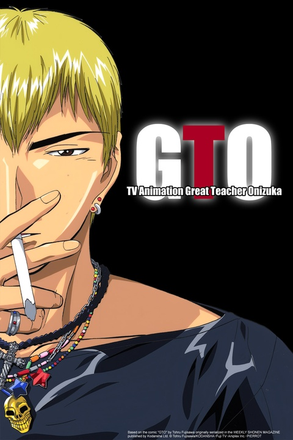
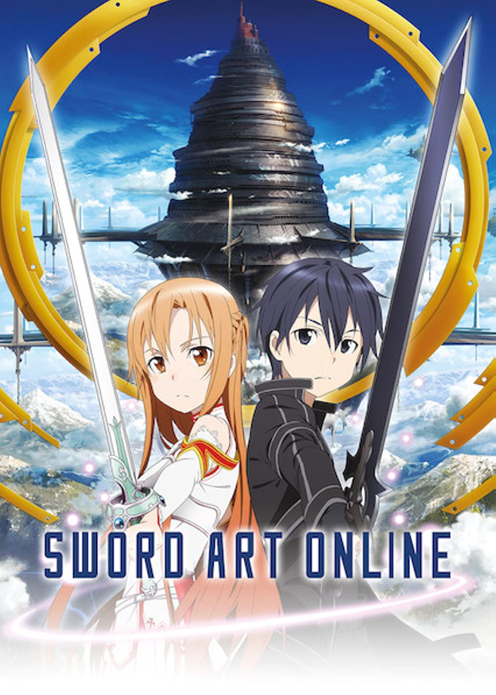

A+

ハイキュー!!
Haikyuu!!
Humor: ★★★★☆
Romance: ★☆☆☆☆
Short boy dreams of becoming a great
volleyball player, then makes this into reality
when he meets a great team with a particularly
great setter. I’ve rewatched this so many times,
so the high ranking is probably a little sentimental,
but it's a great anime with a wide range of likeable
characters, satisfying plot (although repetitive,
but that's to be expected for a sports anime),
and a nice mix of humor and emotional moments.
There's also 4 seasons plus a bunch of OVAs, so
plenty of content to binge watch while we patiently
wait for a new season that may or may not be coming.
The only complaint I have is that the animation in
season 4 is really sucky sometimes, but that was
when COVID first hit, so I will give them a break.

ヲタクに恋は難しい
Wotakoi (wotaku ni koi wa muzukashii)
Humor: ★★★★★
Romance: ★★★★★
Childhood friends unexpectedly meet again
at a new workplace and fall in love, mostly due
to their shared identity as otaku. Green hair and
orange hair are also an otaku couple, but they seem
to express their love through arguments and bickering,
which is entertaining to watch and really makes it
special when they do have sentimental, lovey-dovey
moments. All three love arcs in this anime are quality.
Good subtitles from what I've seen, but there
are some internet slangs used in the show that aren't
translated at all.
A

月刊少女野崎くん
Monthly Girls' Nozaki Kun
Humor: ★★★★★
Romance: ★★★☆☆
A girl tries to confess to her crush, and he
thinks that she’s asking for his autograph because
he is actually a very famous manga writer (although
nobody at school knows). She becomes his assistant
in hopes that she can get close with him and make
him realize her feelings. He is dumb and blind and
is always looking for inspiration for his manga.
Actually, every single character in this anime is
remarkably clueless.
桜蘭高校ホスト部
Ouran High School Host Club
Humor: ★★★★★
Romance: ★★★☆☆
The protagonist becomes a host at her
rich private school's host club, where she
entertains her rich classmates with tea, small
talk, and basically just giving them attention.
However, she is hiding her gender and the fact
that she is actually there to repay the debt of
an expensive vase she broke on her first day as
a student. The blonde man is wildly in love with
her but doesn’t realize because he is stupid.
All the other hosts are charming and quirky in
their own way. Each episode is so ridiculous it
keeps you on your toes.

進撃の巨人
Attack on Titan
Humor: ☆☆☆☆☆
Romance: ☆☆☆☆☆
Humanity fights titans.
Nice story. Very binge worthy.
Animation style changes in the middle and it's
a little distracting at first, but you get used to it.
When will they actually end the anime.
私がモテてどうすんだ
Kiss Him Not Me
Humor: ★★★★★
Romance: ★★★★★
Chubby girl (who is obsessed with BL manga)
loses weight due to extreme shock from her favorite
character's death. Five hot people fight over her.
Kind of like Ouran but everyone is fighting for the
girl. Super lighthearted and funny, comedic changes
in animation style, pretty solid subtitles.
聖☆おにいさん
Saint Young Men
Humor: ★★★★★
Romance: ☆☆☆☆☆
Jesus and Buddha live together in modern
day Tokyo. Comedy and Slice of life, subtitles
suck because some things in this anime are really
hard to translate without cultural context. Movie
length. The manga might be better for English
speakers, but I really enjoyed the anime regardless.
俺物語!!
Ore Monogatari!!
Humor: ★★★★★
Romance: ★★★★★
Big high school boy saves a little high
school girl from a creepy dude on the train and
then falls in love with her. They are both very
awkward and inexperienced, and he thinks that
she likes his best friend at first, but they
figure it out. Very cute.

頭文字D(イニシャルD)
Initial D
Humor: ★★★★☆
Romance: ★☆☆☆☆
Unassuming dumb looking young man is literally
the fastest street racer alive other than his
old man, but even he doesn't realize that he's
fast since he doesn't race against other people,
he just makes tofu deliveries at the ass crack
of dawn and wants to be done as soon as possible.
Old anime but classic for a reason.

呪術廻戦
Jujutsu Kaisen
Humor: ★★★★☆
Romance: ☆☆☆☆☆
Dude with (almost) superhuman physical
abilities gains actual superhuman abilities
by swallowing the finger of a really strong
dude. He then joins other strong people in
defeating curses and bad people. Good characters,
good plot, great animation, looking forward
to finishing season 2 later this year. The movie
is a must-watch btw it's not just an OVA.

ユーリ!!!
Yuri on Ice
Humor: ★★★☆☆
Romance: ★★☆☆☆
Yuri wants to be a better ice skater,
but he kind of sucks. Victor, a world-famous
champion, basically retires to coach Yuri
because a video of Yuri informally skating
Victor's program goes viral. Gay (although
there are debates on whether some moments are
canon or not).
A-
マギ
Magi: The Labyrinth of Magic
Can't summarize it myself because too many good
things happen. Here's what Wikipedia had to say:
"Taking place in a fantasy world that borrows elements from One Thousand and One Nights, the story follows a young boy named Aladdin and his traveling companion Alibaba, who go on adventures conquering dungeons to obtain valuable items, metal vessels, and powerful hosts capable of harnessing magic known as djinns. Upon completing their first dungeon, Aladdin learns of his identity as the titular Magi destined to ordain Alibaba to inherit the throne. As a result, the two decide to continue their travels all while forging friendships and rivalries along the way."
Great characters, cute animation.
ロマンティックキラー
Romantic Killer
Girl is only obsessed with games and
chocolate and her cat, but a magical entity takes
those away from her and forcibly changes her life
into an otome game where hot men appear into her
life and fight over her. Comedy, a little satirical at
times, super fun animation style. Super cheesy
but that's the whole point of the plot.

君の名は。
Your Name.
A girl and a guy keep switching into each other's
bodies, and they soon discover that they are
actually from slightly different timelines as well.
The guy realizes that the girl is in danger, so
he does everything he can to try and save her
despite their conflicting time lines. A beautiful
movie, great even for non-anime watchers, stunning
visuals and a really striking storyline.
B+
ホリミヤ
Horimiya
Shy introverted boy turns out to be very
cool with piercings and tats, falls in love with
the girl in the middle. Everyone falls in love
with someone. Nice school love story.
ひげを剃る。そして女子高生を拾う
Hige wo soru. Soshite jyoshikousei wo hirou.
Working salaryman finds a random runaway
teenage girl and lets her live at his house while
she figures things out. Surprisingly wholesome
even with the sad back story of the girl. Is this
a romance anime? He’s more of a father/big brother
figure. I cried.

四月は君の嘘
Your Lie in April
Bold girl with chronic illness pulls the
shy piano boy out of his shell. Tbh I don’t remember
the ending even though I’ve watched this multiple
times. I remember I cried a lot.
B
キングダム
Kingdom
Peasant boy rises the ranks in Qin dynasty
of China and becomes good friends with the
child emperor.
His dream is to be the best general ever.
Lots of battles. Impressionable characters.
Questionable on the historical accuracy but
entertaining.

弱虫ペダル
Yowamushi Pedal
Otaku boy turns out to be really good
at cycling because he cycles dozens of miles to
get to Akihabara to save money on travel and spend
it on his nerdy hobbies. Wholesome sports anime,
good characters, good plots, feel-good, really
really gross side character that I hate but you
can skip those parts (although he does show up a
lot). Very satisfying to watch, lots of humor.
Binge-worthy.

チェインソーマン
チェインソーマン
Chainsaw Man
Half human half demon boy is hired to
kill demons with a quirky team of individuals.
He is driven by the want to squeeze boobs.
The boss is so strong I just want to know where
she got her powers from. Binge worthy.

天元突破グレンラガン
Gurren Lagann
Boy from underground (who loves to dig holes with
his drill) world teams up with many people
to save the Earth from being destroyed. Very cool
animation that captures so many lines and shapes.
Lots of handsome mechas and handsome women.

ペンギンハイウェイ
Penguin Highway
Super serious little boy researches why
penguins keep on mysteriously appearing in his town.
Beautiful animation, questionable actions by the
beautiful lady, handsome father, very anime-esque
plot. Movie length!

ソーダのように言葉が湧き上がる
Words Bubble Up Like Soda Pop
Super cute movie about a social media
influencer who is insecure about her bunny teeth
and a super shy boy who writes haiku. They look
for a record together and stuff. I'm sure more
happens in the movie but I lowkey forgot because
I only watched it once. The animation colors are
super vibrant and refreshing.

Free!
Hot men. Good youth. What a lovely time.
TBH I don’t remember the plot. I assume they swim.
I remember it was great. I rewatched it like twice.

サマータイムレンダ
サマータイムレンダ
Summer Time Rendering
Boy must save the people on his island
from getting killed by shadow monsters, and he
loops back in time every time he gets killed.
Pretty classic anime plot, still manages to
incorporate romantic elements, solid cast of
characters. Also had really really good reviews on
Japanese TikTok comments.
古見さんは、コミュ症です。
Komi Can't Communicate
Komi has a hard time speaking to other
people because of her social anxiety/communication
disorder, but she has a goal to make 100 friends.
She slowly accomplishes this goal by befriending
very quirky people at her school. Very wholesome,
very humorous - the anime takes the lighthearted
route rather than a serious one.
Orange
I remember really liking this anime but
it wasn’t memorable enough for me to remember.
I think someone dies.
Oh yeah I just looked up the plot and it’s the one
where they get letters from themselves in the future
asking them to save their friend from suicide.
Very classic anime plot, it was enjoyable.

かぐや様は告らせたい ～天才たちの恋愛頭脳戦～
Love is War
note: I
Two elite students like each other but will
rather literally die than confess their love because
the person who confesses first is always inferior in
a relationship. Super good anime, I have to finish
watching it. I think that there is a second season now.

賭ケグルイ
Kakegurui
Black haired heroine transfers into gambling
school and is super good at gambling so she stirs
things up at the school. Lots of gambling, lots of
erotic references and drool, pretty good anime.
I enjoyed it. I think there is a season 2 but I
haven't seen it.

天気の子
Weathering With You
Girl can control the weather, they fall in
love. Good movie.

デスノート
Death Note
Super smart dude somehow gets a notebook
that kills anyone whose names are written down in
it. Another super smart dude tries to catch him.
It was a pretty good plot but I don’t think I would
rewatch.
ゴールデンタイム
Golden Time
Guy gets amnesia at end of high school and
goes to college with no memories. Meets new friends,
makes a girlfriend, but memories fleet back sometimes
- but new and old self can’t coexist, and he realizes
that his new self will soon be erased. A little lacking
in humor for my taste, it’s a pretty serious story.

斉木楠雄のΨ難
The Disastrous Life of Saiki K.
Saiki navigates his life with his supernatural
and quite frankly unfairly strong powers surrounded
by idiots. No overarching storyline, just individual
episodes, so very low commitment. Filled with dry
sarcasm from Saiki. Pretty funny. Subtitles kind of suck.

坂本ですが？
Haven't You Heard? I'm Sakamoto
Same type of show as Saiki K. Pretty good
for a background show. It’s just Sakamoto being cool af.

黒子のバスケ
Kuroko's Basketball
The main character is a good basketball
player because he is so unremarkable that players
don’t see him on the court. He is on a mission to
beat all of his former teammates, who are all god-level.
The plot is repetitive but it’s a solid show. Muscular arms.

ようこそ実力至上主義の教室へ
Classroom of the Elite
Super smart students are divided into classes
from A to D, and these classes are ranked based on the
class’s whole performance. The main dude is smart af
and was bred in some sort of facility or something but
he always lays low and makes sure to perform the average.
He helps his class perform well in various tests but
never takes the credit. But he seems to have an ulterior
motive.

君の膵臓をたべたい
I Want to Eat Your Pancreas
Girl with terminal illness befriends an antisocial
guy and does things on her bucket list with him.
Pretty good movie I guess but there’s like zero comedy
so make sure you’re in a serious mood

恋は雨上がりのように
After the Rain
High school girl is in love with her boss, who is 45.
Kinda wholesome I guess? But it had more comedy potential
that wasn’t fulfilled, also kinda weird how the boss isn’t
an adult enough to completely deny her fantasies. Maybe
it's a social commentary.

天空侵犯
High-Rise Invasion
Pretty solid plot but it’s kind of scary to
watch by yourself haha lots of gore tbh. Oh yeah it’s
the netflix show where the people are dropped off on
the roofs of buildings or whatever and then they have
to run away from the masked people, who are trying to
murder them all.
約束のネバーランド
The Promised Neverland
Kids in orphanage are actually fed to monsters.
The orphans find this out so they try to escape. Pretty
good anime, pretty gory, wouldn’t rewatch but would
watch season 2
Ok jk I got info that season 2 is not interesting

Erased
Boy rescues girl from abusive home situation
and an unexpected person is the antagonist. TBH don’t
remember the plot too well but it was pretty good

Banana Fish
Japanese photographer boy gets caught up in
American gang violence.
Good plot i guess… did not like the ending.
B-

政宗くんのリベンジ
Masamune Kun No Revenge
A formerly chubby guy gets hot and plots
revenge on the girl that broke his heart by getting
her to fall in love with him so that he can reject her.
It was okay I guess. I don’t like seeing women
fight over a mediocre man. Also there needs to be an
actual ending where she figures out everything… Would
rate higher if they come out with season 2 that has an
actual ending.
ましろのおと
Mashiro No Oto
A boy who plays shamisen goes out and plays
shamisen… only watched two episodes, is probably a
really good story but it’s pretty serious so I’m not
entirely that interested.
ノラガミ
Noragami
A pretty low rank god meets a girl and
they fight monsters together. A boy turns into a
sword. Funny at times but overall a pretty serious
storyline, not my personal favorite since it’s very
action/serious/fantasy

好きっていいなよ
Say "I Love You"
Shy girl and popular guy fall in love.
I don’t really remember anything else. Would
probably rank higher if I rewatch it but I’m
not a real fan of the animation style.
極主夫道
The Way of the Househusband
I loved the manga but sadly the anime
wasn’t great, the animation style was really
leaning to a manga reading experience rather
than a smooth anime and it was a little too
simple. But anyways it’s an ex-yakuza member
who is now a loving stay-at-home househusband
(I don’t think he has a kid yet but I don’t
remember). Would recommend the manga but not
really the anime.

とらドラ！
Toradora
Note: I
Small feisty girl is enemies with mean
faced but kind hearted boy, but then they grow
closer and fall in love probably idk. I’ve started
this one a couple of times but never finished it.
３月のライオン
March Comes In Like a Lion
Note: I
Shogi whiz gets taken in by a nice girl
and her nice mom and little sister. I don’t think
I finished the anime bc it’s a slow and wholesome one.
C

うらみちお兄さん
Uramichi Oniisan
Note: I
Self deprecating and depressed man is
one of the hosts for a kids show. Lots of sarcasm
and depressing adult jokes, kind of a background
show. It's trying to be Saiki K and Sakamoto, but
it doesn't quite get there. Maybe it's funny if
you're depressed?

食撃のソーマ
Food Wars
Note: I
There’s a good plot but there’s so much
erotic things going on. The boobs are big and
while I enjoy big boobs these boobs are too
distracting and unnecessary. But the plot is
pretty good, the son of some restaurant owner
makes his way up the ranks of a culinary school.
はたらく細胞!!
Cells at Work!
Note: I
Personified, anime-fied version of human
body cells, systems, functions. Caters to a very
niche audience and I don’t think I am a part of
that audience. Good for all you pre meds out there.

青春ブタ野郎はバニーガール先輩の夢を見ない
Rascal Does Not Dream of Bunny Girl Senpai
Note: I
I don’t think I’ve actually finished
watching it, I’ve tried a couple of times but
it was pretty boring I think. From what I remember,
this dude keeps seeing his senpai in a bunny girl
costume and nobody else seems to be seeing her.

七つの大罪
Seven Deadly Sins
Note: I
Don’t see the hype. I guess it could be
entertaining for kids but there’s big boobs
everywhere. Kinda forgot the plot.

会長はメイド様！
Kaicho Wa Maid Sama!
Note: I
Didn’t finish watching it but it was a
basic romance drama I think. Probably won’t
finish watching it.
F

Great Teacher Onizuka
Great Teacher Onizuka
Note: I
This anime is old and you can really tell.
He’s a teacher and kinda pervy

ソードアート オンライン
ソードアート オンライン
Sword Art Online
Note: I
I didn’t finish watching but… I’m not that
eager to finish watching it … I watched the first
couple of episodes but it wasn’t great. Was it some
kind of VR game world? I heard the later seasons
are better but I’m not even interested.
I

見える子ちゃん
Mieruko Chan
Note: I
This girl can see monsters and ghosts,
even though nobody else around her seems to be
able to see them.
COULD NOT FINISH WATCHING! TOO SCARY
The first scene was something CRAWLING OUT
OF THE FRIDGE no thank you :)
I did try to watch it several times but
from what I remember, it was just very grotesque
and gross (not in a graphic way but just in a
really gross kimoi kind of way) and I simply did
not enjoy watching the show. Maybe there's a good
plot to make up for it somewhere? I'm not going
to find out, though

イジらないで、長瀞さん
Ijiranaide, Nagatoro-san
The girls were too annoying so I didn’t
finish watching the first episode. Gyaru type.

犬夜叉
Inuyasha
Cute comfort show. A group of hooligans
defeat monsters. There are so many episodes.

ハンターxハンター
Hunter x Hunter
I only watched a couple of episodes of
this (I think the first two or three?), so I don't
really know what happens later on in the show, but
it seemed like a pretty good show from the episodes
that I did see. It's not super high on my list of
priorities, though. Maybe if I'm watching it with
my younger siblings or something? I didn't really
see the appeal for me to watch it by myself, kind
of felt like a kids' anime.

ジョジョの奇妙な冒険
Jojo's Bizzare Adventures
I've been meaning to watch more than just
the first episode of this anime because I was really
disappointed by the episode but people told me that
it gets better over time... Maybe when I have the
free time and motivation? Not very high on my
priorities, though.

鋼の錬金術師 FULLMETAL ALCHEMIST
Fullmetal Alchemist: Brotherhood
I've briefly seen a couple episodes. Like
the previous ones on this list, it's just not my
favorite genre so I'm not too eager to pick it up
and finish it by myself, but I see the appeal,
especially for younger audiences.